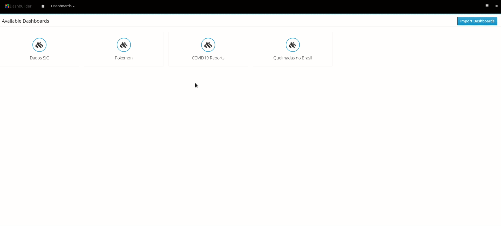
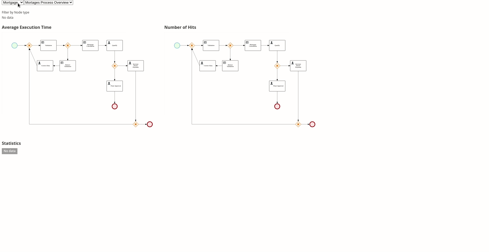
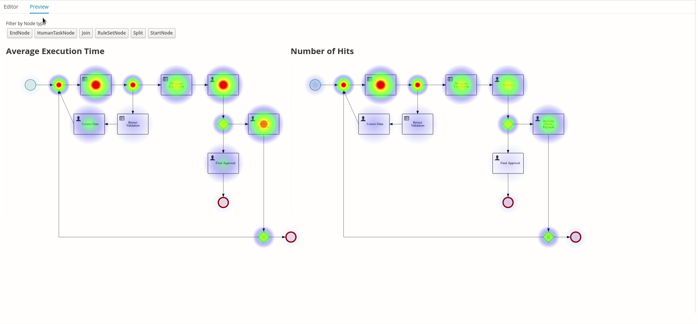

What is new on Business Central, from Foundation Team perspective — September 2020
We recently pushed many cool new features and bug fixes on Business Central added by Foundation Team. Those features are available at the 7.43.0 release.
This post will do a quick overview of those. I hope you guys enjoy it!
Dashbuilder Runtimes
Since some release ago, we have introduced a new standalone application called Dashbuilder Runtimes. This new feature is a lightweight application able to run Business Automation dashboards created on Business Central in a containerized fashion, allowing us to cover many business automation use cases.

Soon we will publish a detailed introduction for Dashbuilder Runtimes.
Dashbuilder Runtime Embedded
On the 7.40.0 release, we improved the embedded capabilities of Dashbuilder Runtime, allowing users to embed a specific dashboard from an instance of Dashbuilder runtime on their web apps.
Every dashboard in the Dashbuilder runtime can be accessed in embedded mode and integrated directly on your application. See an example of this integration in a simple HTML page:

We also provided a new rest API that allows you to create a dashboard and query the dashboards and their pages on my Dashbuilder runtime instance.
It is possible to wrap the REST calls using a Javascript library published in npm: dashbuilder-js/api. With this API, you can use dashboards directly in your application. See examples in dashbuilder-js repository.

Soon we will publish a detailed post for Dashbuilder Runtime Embedded.
Dashbuilder Runtime Multi Dashboards Support
On the 7.42 release, we introduced a new feature on Dashbuilder Runtimes that allows users to import multiple dashboards on the same runtime instance.

The multi-mode is turned off by default. To turn it on, you must set the system property dashbuilder.runtime.multi as true.
Soon we will publish a detailed post for Dashbuilder Runtime Multi Dashboards support.
Dashbuilder External Components
How do I write my external component on Dashbuilder? In Business Central 7.43, we introduced a new way of creating your components in JavaScript and integrating them on dashboards.
External components are custom Dashbuilder page parts that users can develop to consume datasets from Business Central and display data any way users want. On community, we already have a lot of cool new external components, including a Heatmap for process and support for beautiful Victoria charts.

Soon we will publish a detailed post for Dashbuilder External Components support.
Other bug fixes and improvements:
We also fixed several bugs and made some performance improvements on Business central:
- RHPAM-2808 : Making LRU cache configurable to avoid large memory retention
- RHPAM-2957 : Business central doesn’t remember last used branch on logout
- RHPAM-2737 : Testing on Project level fails if project was cloned via git/clone REST API removed and cloned again
- RHPAM-2946 : Error when renaming an asset with pending changes
- RHPAM-3134 : UI issue (in business-central) when more than one kie-server (with different ID) is connected.
- RHPAM-2865 : Wrong created date on asset list
- RHDM-1354 : NPE creating a project using Decision Central REST API and githook configured
- RHPAM-3119 : [Data Modeler] Unsaved changes dialog appears after rename
- RHDM-1378 : Issue re-importing a repository initially created by importing an empty repository in Business Central
- RHPAM-3117 : Document upload doesn’t work on Windows
Thank you to everyone involved!
I would like to thank everyone involved with this release, from the excellent Foundation Team Engineers to the lifesavers QEs and all the UX people that help us make our work look fantastic!